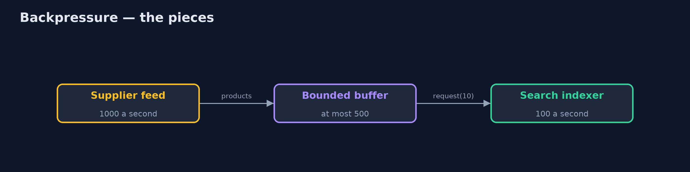
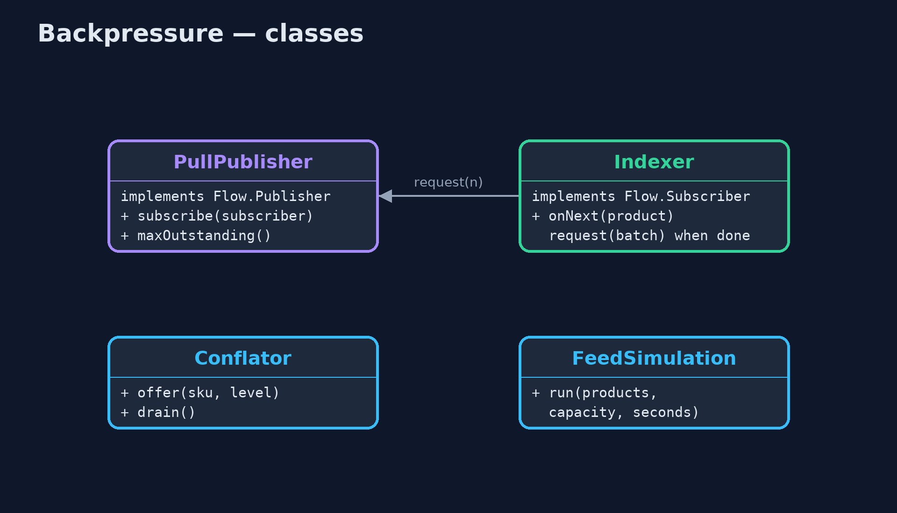
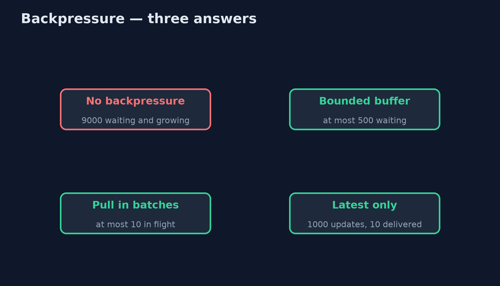
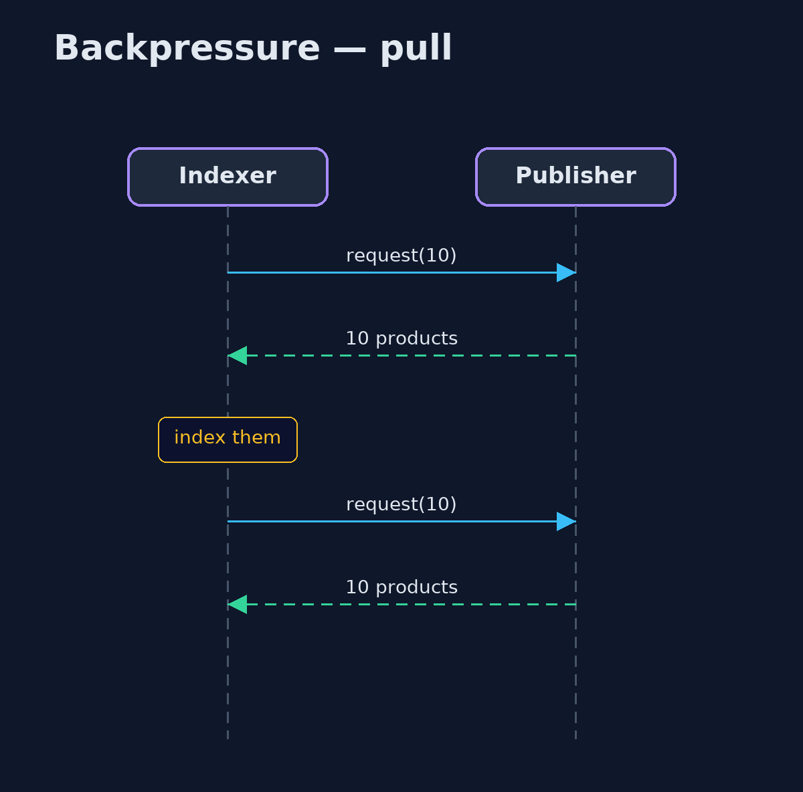

Backpressure Pattern
src/main/java/com/jk/explore/backpressure/
├── BackpressureDemo.java The five acts: no backpressure, a bounded buffer, asking for what you can handle, keeping only the latest, and the bill
├── Conflator.java For updates where only the latest matters: keeps one pending value per product and drops the older ones
├── FeedSimulation.java A supplier's product feed (1,000 products a second) into the search indexer (100 a second), second by second
├── Indexer.java The search indexer as a subscriber: asks for a batch, indexes it, then asks for the next
└── PullPublisher.java The pattern with Java's own Reactive Streams interfaces: the publisher sends only as many items as the subscriber has asked forLet a slow consumer push back on a fast producer, by bounding what waits, asking for work in batches, or dropping stale updates, instead of buffering until memory runs out.
Backpressure is a way for a slow consumer to tell a fast producer to slow down. Without it, whatever the consumer cannot handle yet piles up in memory until the service falls over. With it, the amount of waiting work is bounded: the producer is made to wait, the consumer asks only for what it can handle, or old updates are dropped when only the latest matters.
Java has the Reactive Streams interfaces built in, in java.util.concurrent.Flow: a subscriber calls request(n), and the publisher may send at most n items.
The idea in everyday terms
Think of a kitchen and its waiters. If the waiters keep taking orders faster than the chefs can cook, the ticket rail overflows and everything is late. A good kitchen tells the front of house to stop seating tables for a while. The pressure travels back from the kitchen to the door.
The scenario
The online store's search indexer reads a supplier's product feed. The supplier sends a thousand products a second; the indexer handles a hundred. Everything the indexer has not reached waits in memory. After ten seconds nine thousand products are waiting, and the pile grows by nine hundred a second.
Run
./gradlew runThe demo tells the story in 5 acts, each printing exact numbers that the tests check:
| Act | What it shows |
|---|---|
| 1. No backpressure | The supplier sends 1,000 products a second, the indexer handles 100: after 10 seconds 9,000 wait in memory, growing by 900 a second. |
| 2. A bounded buffer | A buffer of 500: when it is full the supplier waits. Never more than 500 waiting; all 10,000 indexed in 100 seconds. |
| 3. Ask for what you can handle | With Java's Flow interfaces, the indexer requests 10 at a time: all 10,000 indexed, never more than 10 in flight. |
| 4. Keep only the latest | 1,000 stock-level updates for 10 products: only 10 are delivered, the latest for each. |
| 5. The bill | The supplier's feed took 100 seconds instead of 10, so it must cope with being slowed; dropping only suits data where the latest is all that matters. |
Test
./gradlew test5 tests in BackpressureTest, DemoRunsTest. Every number the demo prints is asserted, and nothing depends on the clock, so every run gives the same result.
Technologies and versions
| Technology | Version | Used for |
|---|---|---|
| Java | 21 | the code (toolchain set in build.gradle) |
| Gradle | 9.2.1 (wrapper) | build and run, nothing to install |
| JUnit | 5.10.2 | the tests |
| videokit | repository tool | the narrated video and animation: Piper en_US-amy-medium, speed 0.8, longer pauses (the approved amy-slow voice) |
Learning Material
| Document | What it is for |
|---|---|
| Problem statement | the situation and what the project must show |
| Prerequisites | what you need to know first |
| Backpressure, explained | the acts in prose |
| Session guide | a one-hour lesson with exercises |
| Animated walkthrough | the acts step by step, narrated |
| Spec | what this project must be true of |
The pattern in one picture
Demand flows back from the indexer to the supplier.

Where each piece sits
The JDK's Flow interfaces carry the demand.

How the data moves
Wait, pull, or drop the stale.

Who calls whom, in order
Nothing is sent that was not asked for.

Video
video/backpressure-pattern-explained.mp4 (with .m4a audio and .srt subtitles) is built by video/build_video.sh. Rendered media is not committed.
What it costs
- The waiting moves upstream. The supplier's feed took 100 seconds instead of 10; it must be able to cope with being slowed.
- Dropping loses data. Keeping only the latest is right for stock levels, wrong for orders.
- Harder code. Request counts and completion signals are easy to get subtly wrong; use a library where you can.
When this is too much
When the producer is never faster than the consumer, or the volume is small and bounded, a plain queue is enough. Backpressure pays off when a fast source can outrun a slow sink for long periods.
Where you have already met this
java.util.concurrent.FlowandSubmissionPublisher.- Project Reactor, RxJava, Akka Streams and Kafka consumers pulling at their own pace.
- A bounded
ArrayBlockingQueue, whoseputwaits when it is full. - TCP flow control, which slows the sender when the receiver's window is full.
Where this sits
This project is in micro-services-design-patterns, and near Priority Queue, which decides the order work is taken in, where backpressure decides how much is let in.